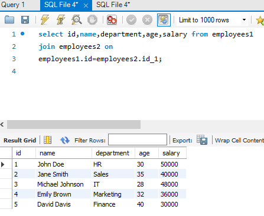
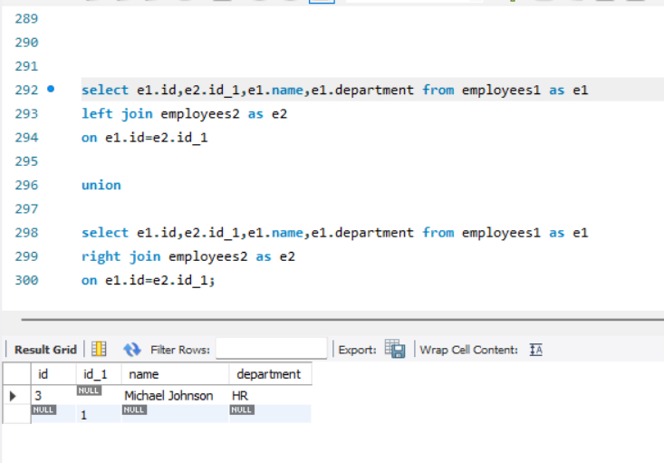
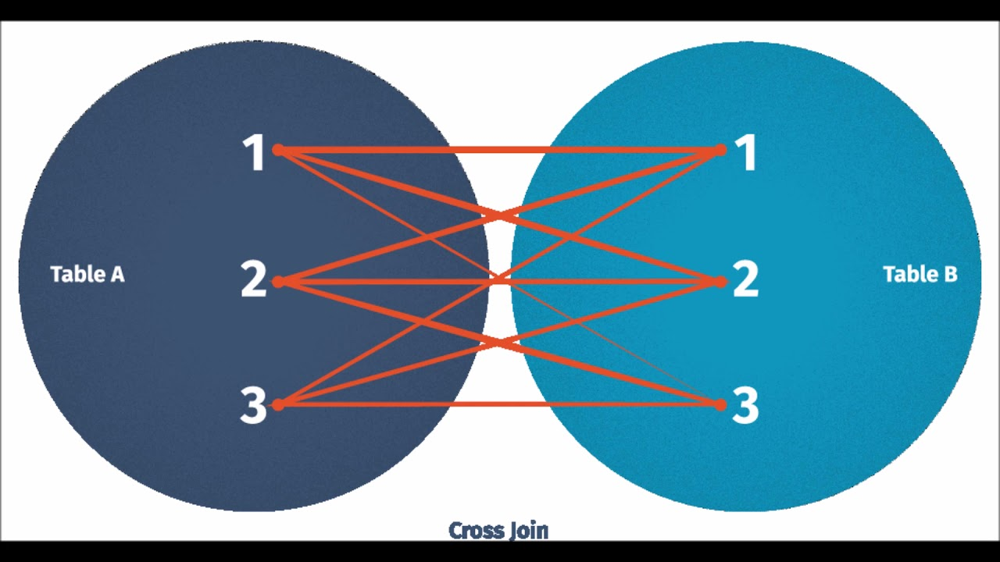

SQL JOINS
Contents
SQL JOINS¶
What is SQL JOIN?¶
In SQL, a JOIN is used to combine rows from two or more tables based on a related column between them. It allows you to retrieve data from multiple tables simultaneously, combining information from different sources into a single result set.
There are different types of JOINs in SQL:
INNER JOIN: Retrieves only the rows that have matching values in both tables. It combines rows from two tables where the specified column(s) have the same values in both tables.
LEFT JOIN (or LEFT OUTER JOIN): Retrieves all the rows from the left table and the matching rows from the right table. If there is no match in the right table, the result will contain NULL values for the right table columns.
RIGHT JOIN (or RIGHT OUTER JOIN): Similar to the LEFT JOIN but retrieves all the rows from the right table and the matching rows from the left table. If there is no match in the left table, the result will contain NULL values for the left table columns.
FULL JOIN (or FULL OUTER JOIN): Retrieves all the rows from both tables, including those with no match in either table. If there is no match in one of the tables, the result will contain NULL values for the columns of the table with no match.
CROSS JOIN: Retrieves the Cartesian product of the two tables, resulting in a combination of all rows from the first table with all rows from the second table.
JOINs are widely used in SQL to combine related data from different tables, enabling powerful data retrieval and analysis operations. They are fundamental for building complex queries and are essential for efficient and organized database design.
How is SQL JOIN used?¶
SQL JOINs are used to combine rows from two or more tables based on related columns. They are used in SELECT queries to retrieve data from multiple tables simultaneously, allowing you to access and merge information from different sources into a single result set.
Here’s how SQL JOINs are used:
Identify the Tables: Determine the tables you want to retrieve data from. These tables should have a common column (a key) that establishes a relationship between them.
Specify the JOIN Clause: In the SELECT query, use the appropriate JOIN keyword (e.g., INNER JOIN, LEFT JOIN, RIGHT JOIN, FULL JOIN, or CROSS JOIN) to specify how you want to combine the tables. The JOIN clause is usually followed by the table name and the ON keyword, which specifies the columns used to match the rows from different tables.
Combine Tables: The JOIN operation combines the rows from the specified tables based on the related columns. Rows that have matching values in the specified columns are combined into the result set.
Retrieve Data: The SELECT statement retrieves the desired data from the combined result set. You can select specific columns or use wildcard (*) to select all columns.
Here’s an example of how SQL JOIN works:
Consider two tables, “customers” and “orders,” with a common column “customer_id”:
SELECT customers.name, orders.order_id, orders.order_date
FROM customers
INNER JOIN orders
ON customers.customer_id = orders.customer_id;
In this example, we perform an INNER JOIN between the “customers” and “orders” tables based on the “customer_id” column. The result set will include the names of customers and their corresponding order IDs and order dates from the “orders” table where there is a match in the “customer_id” column.
By using SQL JOINs, you can retrieve related data from multiple tables in a single query, enabling powerful data analysis and efficient data retrieval. JOINs are essential for building complex queries and are a core aspect of SQL for managing and organizing data in relational databases.
How does SQL JOIN works?¶
SQL JOIN works by combining rows from two or more tables based on a related column or columns. It allows you to retrieve data from multiple tables simultaneously, merging information from different sources into a single result set.
Let’s explain SQL JOIN with an example using two tables: “employees” and “departments.”
Table: employees
emp_id |
emp_name |
department_id |
|---|---|---|
1 |
John Doe |
101 |
2 |
Jane Smith |
102 |
3 |
Michael Lee |
101 |
4 |
Emily Brown |
103 |
5 |
David Davis |
102 |
Table: departments
department_id |
department_name |
|---|---|
101 |
HR |
102 |
Sales |
103 |
Marketing |
Example SQL query with INNER JOIN:
SELECT emp_name, department_name
FROM employees
INNER JOIN departments
ON employees.department_id = departments.department_id;
Explanation:
The SELECT statement retrieves the columns “emp_name” and “department_name” from the tables “employees” and “departments,” respectively.
The INNER JOIN is specified using the INNER JOIN keyword. It combines rows from both tables where the “department_id” column matches between the two tables.
The ON clause indicates the condition for the join. In this case, it matches the “department_id” column from the “employees” table with the “department_id” column from the “departments” table.
The result set will contain rows that have matching “department_id” values in both tables. In this example, the “employees” table has a column “department_id” with values 101, 102, and 103, and the “departments” table has corresponding rows with the same “department_id” values.
The query will return the “emp_name” from the “employees” table and the “department_name” from the “departments” table for each matched row.
Result:
emp_name |
department_name |
|---|---|
John Doe |
HR |
Jane Smith |
Sales |
Michael Lee |
HR |
Emily Brown |
Marketing |
David Davis |
Sales |
The SQL JOIN operation allows you to combine data from multiple related tables, providing a way to access and analyze data across different entities in a relational database. It’s a powerful feature in SQL that enables efficient and effective data retrieval and analysis.
Query for creating tables
CREATE TABLE employees1 (
id INT,
name VARCHAR(50),
department VARCHAR(50),
age INT,
id_1 INT,
foreign key(id_1) references employees2(id_1)
);
INSERT INTO employees1 VALUES(1, 'John Doe', 'HR', 30,1);
INSERT INTO employees1 VALUES(2, 'Jane Smith', 'Sales', 35,2);
INSERT INTO employees1 VALUES(3, 'Michael Johnson', 'HR', 28,1);
INSERT INTO employees1 VALUES(4, 'Emily Brown', 'Marketing', 32,3);
INSERT INTO employees1 VALUES(5, 'David Davis', 'Finance', 40,4);
CREATE TABLE employees2(
id_1 INTEGER PRIMARY KEY,
salary float
);
INSERT INTO employees2 VALUES(1,50000) ;
INSERT INTO employees2 VALUES(2,40000) ;
INSERT INTO employees2 VALUES(3,48000 ) ;
INSERT INTO employees2 VALUES(4,36000) ;
INSERT INTO employees2 VALUES(5,30000) ;
Example for join:
For Example:-

The SELECT statement specifies the columns to be retrieved from the tables.
The columns selected are id, name, department, age, and salary.
The FROM clause specifies the first table, employees1, from which the columns will be selected.
The JOIN keyword is used to combine records from two tables based on a specified condition.
The employees2 table is joined with employees1 using the ON keyword and the condition employees1.id = employees2.id_1. This means that the id column in employees1 is matched with the id_1 column in employees2.
The result of the join operation will contain rows where the id in employees1 matches the id_1 in employees2.
The SELECT query will retrieve the specified columns from the resulting joined table.
Types of SQL JOINS¶
1. INNER JOIN:¶

An INNER JOIN is used to combine rows from two or more tables based on a related column, and it returns only the rows that have matching values in both tables. It helps retrieve data where there is a relationship between the specified columns in the joined tables.
Let’s illustrate INNER JOIN with an example using two tables: “orders” and “customers.”
Table: orders
order_id |
order_date |
customer_id |
|---|---|---|
101 |
2023-05-01 |
1 |
102 |
2023-05-02 |
2 |
103 |
2023-05-03 |
1 |
104 |
2023-05-04 |
3 |
105 |
2023-05-05 |
2 |
Table: customers
customer_id |
customer_name |
city |
|---|---|---|
1 |
John Doe |
New York |
2 |
Jane Smith |
Los Angeles |
3 |
Michael Lee |
Chicago |
Example SQL query with INNER JOIN:
SELECT orders.order_id, orders.order_date, customers.customer_name
FROM orders
INNER JOIN customers
ON orders.customer_id = customers.customer_id;
Explanation:
The SELECT statement retrieves the columns “order_id,” “order_date,” and “customer_name” from the “orders” and “customers” tables, respectively.
The INNER JOIN is specified using the INNER JOIN keyword. It combines rows from both tables where the “customer_id” column matches between the two tables.
The ON clause indicates the condition for the join. In this case, it matches the “customer_id” column from the “orders” table with the “customer_id” column from the “customers” table.
The result set will contain rows that have matching “customer_id” values in both tables. In this example, the “orders” table has “customer_id” values 1, 2, and 3, and the “customers” table has corresponding rows with the same “customer_id” values.
The query will return the “order_id” and “order_date” from the “orders” table and the “customer_name” from the “customers” table for each matched row.
Result:
order_id |
order_date |
customer_name |
|---|---|---|
101 |
2023-05-01 |
John Doe |
102 |
2023-05-02 |
Jane Smith |
103 |
2023-05-03 |
John Doe |
104 |
2023-05-04 |
Michael Lee |
105 |
2023-05-05 |
Jane Smith |
The INNER JOIN in this example combines data from both the “orders” and “customers” tables based on the “customer_id” column, giving us a result set that includes the “order_id” and “order_date” from the “orders” table and the corresponding “customer_name” from the “customers” table for each matched row.
2. LEFT JOIN (or LEFT OUTER JOIN):¶

A LEFT JOIN, also known as a LEFT OUTER JOIN, is a type of SQL join that retrieves all the rows from the left table and the matching rows from the right table based on a specified condition. If there is no match in the right table, the result will contain NULL values for the columns of the right table.
Let’s delve into the details of the LEFT JOIN with an example using two tables: “departments” and “employees.”
Table: departments
department_id |
department_name |
|---|---|
101 |
HR |
102 |
Sales |
103 |
Marketing |
Table: employees
emp_id |
emp_name |
department_id |
|---|---|---|
1 |
John Doe |
101 |
2 |
Jane Smith |
102 |
3 |
Michael Lee |
101 |
4 |
Emily Brown |
103 |
Example SQL query with LEFT JOIN:
SELECT employees.emp_name, departments.department_name
FROM employees
LEFT JOIN departments
ON employees.department_id = departments.department_id;
Explanation:
The SELECT statement retrieves the columns “emp_name” from the “employees” table and “department_name” from the “departments” table.
The LEFT JOIN is specified using the LEFT JOIN keyword. It combines all rows from the “employees” table with the matching rows from the “departments” table based on the “department_id” column.
The ON clause indicates the condition for the join. In this case, it matches the “department_id” column from the “employees” table with the “department_id” column from the “departments” table.
The result set will contain all the rows from the “employees” table, including rows where the “department_id” has a match in the “departments” table.
If there is a match in the “departments” table, the corresponding “department_name” is included in the result.
If there is no match (e.g., “employees” with “department_id” 103 has no match in “departments”), the “department_name” column in the result will contain NULL.
Result:
emp_name |
department_name |
|---|---|
John Doe |
HR |
Jane Smith |
Sales |
Michael Lee |
HR |
Emily Brown |
Marketing |
In this example, the LEFT JOIN retrieves all rows from the “employees” table and matches them with corresponding rows in the “departments” table based on the “department_id.” The “department_name” is included for the matching rows, while NULL is used for rows with no matching department.
The LEFT JOIN is particularly useful when you want to retrieve all the data from one table and include related information from another table, even if there is no matching record in the second table. It’s a common join type for scenarios where you want to see the complete dataset from the left table while supplementing it with data from the right table where available.
3. RIGHT JOIN (or RIGHT OUTER JOIN):¶

A RIGHT JOIN, also known as a RIGHT OUTER JOIN, is a type of SQL join that retrieves all the rows from the right table and the matching rows from the left table based on a specified condition. If there is no match in the left table, the result will contain NULL values for the columns of the left table.
Let’s illustrate the RIGHT JOIN with an example using two tables: “departments” and “employees.”
Table: departments
department_id |
department_name |
|---|---|
101 |
HR |
102 |
Sales |
103 |
Marketing |
Table: employees
emp_id |
emp_name |
department_id |
|---|---|---|
1 |
John Doe |
101 |
2 |
Jane Smith |
102 |
3 |
Michael Lee |
101 |
4 |
Emily Brown |
103 |
Example SQL query with RIGHT JOIN:
SELECT employees.emp_name, departments.department_name
FROM employees
RIGHT JOIN departments
ON employees.department_id = departments.department_id;
Explanation:
The SELECT statement retrieves the columns “emp_name” from the “employees” table and “department_name” from the “departments” table.
The RIGHT JOIN is specified using the RIGHT JOIN keyword. It combines all rows from the “departments” table with the matching rows from the “employees” table based on the “department_id” column.
The ON clause indicates the condition for the join. In this case, it matches the “department_id” column from the “employees” table with the “department_id” column from the “departments” table.
The result set will contain all the rows from the “departments” table, including rows where the “department_id” has a match in the “employees” table.
If there is a match in the “employees” table, the corresponding “emp_name” is included in the result.
If there is no match (e.g., “departments” with “department_id” 103 has no match in “employees”), the “emp_name” column in the result will contain NULL.
Result:
emp_name |
department_name |
|---|---|
John Doe |
HR |
Jane Smith |
Sales |
Michael Lee |
HR |
NULL |
Marketing |
In this example, the RIGHT JOIN retrieves all rows from the “departments” table and matches them with corresponding rows in the “employees” table based on the “department_id.” The “emp_name” is included for the matching rows, while NULL is used for rows with no matching employee.
The RIGHT JOIN is useful when you want to retrieve all the data from one table and include related information from another table, even if there is no matching record in the first table. It’s a common join type for scenarios where you want to see the complete dataset from the right table while supplementing it with data from the left table where available.
4. FULL JOIN (or FULL OUTER JOIN):¶

A FULL OUTER JOIN, also known as a FULL JOIN, is a type of SQL join that combines all rows from both the left and right tables, including the rows that have no matching values in the joined columns. It creates a result set that contains the union of the records from both tables, with NULL values filling in the columns for unmatched rows.
Let’s illustrate the FULL OUTER JOIN with an example using two tables: “employees1” and “employees2.”
Example SQL query with FULL OUTER JOIN in MySQL Workbench:
select e1.id,e2.id_1,e1.name,e1.department from employees1 as e1
left join employees2 as e2
on e1.id=e2.id_1
union
select e1.id,e2.id_1,e1.name,e1.department from employees1 as e1
right join employees2 as e2
on e1.id=e2.id_1;

Explanation:
Left Join:
The LEFT JOIN clause combines rows from employees1 with matching rows from employees2 based on the condition e1.id = e2.id_1. If a matching row is not found in employees2 for a particular employee in employees1, the columns from employees2 will be filled with NULL values in the result set.
Right Join:
The RIGHT JOIN clause is similar to the left join, but it reverses the order in which rows are preserved. All rows from employees2 are included in the result set, and columns from employees1 will be filled with NULL values if there’s no matching employee in employees1.
UNION
The UNION operation combines the results of the left join and right join into a single result set. Duplicate rows caused by matching employees in both joins will be removed.
Expected result
The final result set will include all employees from employees1 along with their department and name. The id_1 column will show the corresponding ID from employees2. For employees who don’t have a matching entry in employees2 (based on the left join and right join), the salary column will be NULL.
This query helps retrieve comprehensive employee information from both tables, even if some employees might not have salary data in employees2.
CROSS JOIN:

A CROSS JOIN, also known as a Cartesian join, is a type of SQL join that combines every row from one table with every row from another table. Unlike other types of joins that have a specific matching condition, a CROSS JOIN simply creates a Cartesian product of the rows from both tables, resulting in a new table with all possible combinations of the rows.
Let’s illustrate the CROSS JOIN with an example using two tables: “departments” and “employees.”
Table: departments
department_id |
department_name |
|---|---|
101 |
HR |
102 |
Sales |
Table: employees
emp_id |
emp_name |
|---|---|
1 |
John Doe |
2 |
Jane Smith |
3 |
Michael Lee |
Example SQL query with CROSS JOIN:
SELECT employees.emp_name, departments.department_name
FROM employees
CROSS JOIN departments;
Explanation:
The SELECT statement retrieves the columns “emp_name” from the “employees” table and “department_name” from the “departments” table.
The CROSS JOIN is specified using the CROSS JOIN keyword. It combines every row from the “employees” table with every row from the “departments” table, resulting in a Cartesian product of both tables.
The result set will contain all possible combinations of rows between the two tables. For each row in the “employees” table (3 rows), it will be paired with each row in the “departments” table (2 rows), resulting in a total of 3 x 2 = 6 rows in the result.
The columns “emp_name” and “department_name” will contain the values from the respective rows for each combination.
Result:
emp_name |
department_name |
|---|---|
John Doe |
HR |
Jane Smith |
HR |
Michael Lee |
HR |
John Doe |
Sales |
Jane Smith |
Sales |
Michael Lee |
Sales |
In this example, the CROSS JOIN creates a new table with all possible combinations of rows from both the “employees” and “departments” tables. Each row from the “employees” table is paired with every row from the “departments” table, resulting in six rows in the result set.
CROSS JOIN is used when you want to create a Cartesian product of rows from multiple tables without any specific matching condition. It’s not commonly used in practical scenarios due to the potentially large number of rows generated, but it can be useful for certain specialized calculations or when you want to explore all possible combinations of data from different sources.
Exercise¶
Theory Questions:¶
What is the primary purpose of SQL JOINs?
In what scenarios would you use a JOIN operation in SQL?
Explain the difference between INNER JOIN and LEFT JOIN.
How does a RIGHT JOIN differ from a LEFT JOIN?
When would you use a FULL OUTER JOIN over other types of JOINs?
Describe a scenario where a CROSS JOIN might be useful. Why would this type of join be rare in practical applications?
How does the ON clause work in JOIN operations?
What happens to the non-matching rows when performing a LEFT JOIN?
In an INNER JOIN operation between two tables, if one table contains 10 rows and the other table contains 7 rows with only 5 matching rows, how many rows would the result set contain?
How can you optimize JOIN operations for better performance in large datasets?
Explain how indexes can impact the performance of JOIN operations.
What are self joins, and when might you use one?
How do JOIN operations support the principles of relational databases?
Explain the difference between a natural join and an equi join.
Why is it essential to be cautious when using JOINs, especially in terms of the potential size of the result set?
If you wanted to list all the employees from the “employees” table and their respective department names from the “departments” table, but also wanted to include employees without a department, which JOIN would you use?
Table Query for questions:
Table 1:
CREATE TABLE movies (
movie_id INT PRIMARY KEY,
title VARCHAR(255),
release_year INT,
genre VARCHAR(50),
director_id INT,
foreign key (director_id) references directors(director_id)
);
INSERT INTO movies VALUES
(1, 'Space Odyssey', 2020, 'Sci-Fi', 1),
(2, 'The Great Escape', 2019, 'Action', 2),
(3, 'Romantic Fable', 2021, 'Romance', 3),
(4, 'Mystery of Time', 2022, 'Mystery', NULL),
(5, 'Comedy Nights', 2020, 'Comedy', 2),
(6, 'Historical Journey', 2018, 'History', NULL),
(7, 'Future Wars', 2022, 'Sci-Fi', 1),
(8, 'Nature Documented', 2021, 'Documentary', 4),
(9,'Top Gun',2018,'Drama & Action',1);
Table 2:
CREATE TABLE directors (
director_id INT PRIMARY KEY,
name VARCHAR(255),
birth_year INT,
release_year INT,
nationality VARCHAR(50)
);
INSERT INTO directors VALUES
(1, 'John Smith',1975, 2020, 'American'),
(2, NULL,1982, 2019, 'British'),
(3, 'Michael Brown',1968, 2021, 'Canadian'),
(4, 'Sophia Davis',1978, 2021, 'Australian'),
(5, 'Daniel Lee',1980, 2018, 'Korean');
Coding Questions:¶
Q. List all movies along with their director names.
Q. Find the titles of movies that do not have an associated director in the directors table.(Hint : Use ALTER to Drop the constraint)
Q. Display the names of directors who have directed more than one movie.
Q. List all movies released after 2019 along with their directors’ nationalities.
Q. Find the titles of movies along with their directors’ names, for movies that belong to the ‘Sci-Fi’ genre.
Q. List all directors who have made a ‘Comedy’ movie.
Q. Show the title and release year of movies directed by ‘Emily Johnson’.
Q. Identify movies released before 2021 that do not have a director listed.
Q. Display the count of movies each director has made, including directors who have not made any movies.
Q. List the movies and their genres directed by directors born after 1970.
Q. Show the titles of movies along with the birth years of their directors.
Q. List the names of all directors and the number of ‘Action’ movies they have directed.
Q. Find the titles of movies directed by directors of ‘American’ nationality.
Q. Display the nationalities of directors who have directed movies released in 2020 or later.
Q. List all movies, including the director’s name, for those movies where the director’s last name is ‘Johnson’.
Q. List all movies by the same directors in descending order of release year.
Q. Find directors who have directed in more than one genre.
Q. Calculate the total number of movies each director has made, sorted by the most prolific.
Q. Show all directors who have made both ‘Sci-Fi’ and ‘Action’ movies without listing the same director twice.
Q. Identify the director who has worked with the most genres.
Q. Calculate the span of years each director has been active (from their first to their last movie).
Q. List directors whose movies have never been in the ‘Documentary’ genre.
Q. Find the year with the most diverse genres of movies released.
Q. Show all movies released in the same year as ‘Space Odyssey’ but in a different genre.